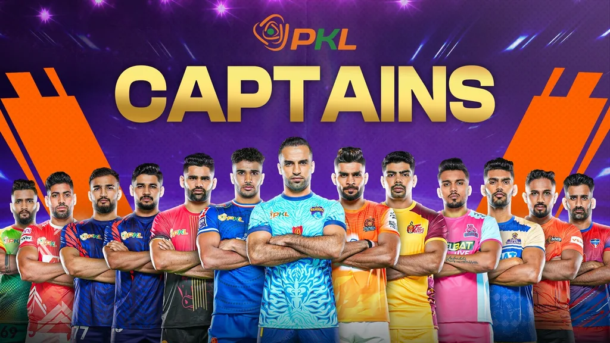

PRO KABADDI LEAGUE
The Pro Kabaddi League, abbreviated as PKL, is an Indian men's kabaddi league.[1] It premiered in 2014 and airs on Star Sports.[2] It is the most popular kabaddi league in the world and the second most watched sports league in India after the cricket league Indian Premier League.[3] Since its inception there have been eight different champions. Patna Pirates have won the league three consecutive times. Jaipur Pink Panthers and Dabang Delhi have won twice each, while U Mumba, Bengaluru Bulls, Bengal Warriorz, Puneri Paltan and Haryana Steelers have one title each. Dabang Delhi are the current champions after winning their second title in the 2025 edition.
The Pro Kabaddi League follows a round-robin format, where each team plays against 6 teams twice and 6 teams once during the league phase. At the end of the league phase, the top 4 teams qualify for the playoffs, while the teams ranking from position 5 to 8 qualify for the play-ins. The playoffs and play-ins consist of eliminators and finals where teams compete to reach the ultimate final match. The team that wins the final is crowned the champion of the Pro Kabaddi League. The league has various individual awards like the Most Valuable Player aka MVP, Best Raider, and Best Defender, among others, to recognize outstanding performances of players during the season.